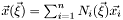
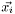
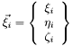
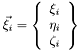
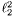
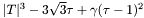

| Mesquite::AddQualityMetric | |
| Mesquite::AffineMapMetric | Compare targets to affine map to ideal element |
| Mesquite::ArrayIterator | |
| Mesquite::ArrayMesh | |
| Mesquite::AspectRatioGammaQualityMetric | Object for computing the aspect ratio gamma of simplicial elements |
| Mesquite::AveragingQM | Averaging functionality for use in quality metrics |
| Mesquite::AWMetric | A metric for comparing a matrix A with a target matrix W |
| Mesquite::AWMetric2D | |
| Mesquite::AWMetric3D | |
| Mesquite::AWMetricBarrier | A metric for comparing a matrix A with a target matrix W |
| Mesquite::AWMetricBarrier2D | |
| Mesquite::AWMetricBarrier3D | |
| Mesquite::AWMetricNonBarrier | The parent class for all AWMetricNonBarrier sub-classes |
| Mesquite::AWMetricNonBarrier2D | |
| Mesquite::AWMetricNonBarrier3D | |
| Mesquite::AWQualityMetric | Compare targets to mapping function Jacobian matrices |
| Mesquite::AWShape2DB1 | |
| Mesquite::AWShape2DNB1 | |
| Mesquite::AWShape2DNB2 | |
| Mesquite::AWShapeOrientNB1 | |
| Mesquite::AWShapeSizeB1 | |
| Mesquite::AWShapeSizeOrientNB1 | |
| Mesquite::AWSizeB1 | |
| Mesquite::AWSizeNB1 | |
| Mesquite::AWUntangleBeta | |
| Mesquite::BoundedCylinderDomain | |
| Mesquite::CachedTargetData | |
| Mesquite::CachingTargetCalculator | Cache target matrices on PatchData |
| Mesquite::CircleDomain | |
| Mesquite::CompareQM | Compare values for two supposedly equivalent quality metrics |
| Mesquite::CompositeOFAdd | Adds two ObjectiveFunction values together |
| Mesquite::CompositeOFMultiply | Multiplies two ObjectiveFunction values together |
| Mesquite::CompositeOFScalarAdd | Adds a scalar to a given ObjectiveFunction |
| Mesquite::CompositeOFScalarMultiply | Scales a given an ObjectiveFunction |
| Mesquite::ConditionNumberQualityMetric | Computes the condition number of given element |
| Mesquite::ConicDomain | |
| Mesquite::ConjugateGradient | Optimizes the objective function using the Polack-Ribiere scheme |
| Mesquite::CurveDomain | Domain used for optional curve smoother |
| Mesquite::CylinderDomain | |
| Mesquite::DeformingCurveSmoother | Utility to do curve smoothing |
| Mesquite::DeformingDomainWrapper | Smooth mesh with deforming domain (deforming geometry) |
| Mesquite::DimConst< D > | Dimension-specific constants |
| Mesquite::DimConst< 2 > | |
| Mesquite::DimConst< 3 > | |
| Mesquite::DomainClassifier | Assign subsets of a mesh do different domains |
| Mesquite::DomainClassifier::DomainBlock | |
| Mesquite::DomainClassifier::DomainSet | |
| Mesquite::EdgeIterator | Iterate over all edges in a patch |
| Mesquite::EdgeIterator::Edge | |
| Mesquite::EdgeLengthMetric | |
| Mesquite::EdgeLengthQualityMetric | Computes the lengths of the edges connected to given a vertex. |
| Mesquite::EdgeLengthRangeQualityMetric | Computes the edge length range metric for a given vertex |
| Mesquite::EdgeQM | Base type for quality metrics evaluated for each edge |
| Mesquite::ElementArrayIterator | |
| Mesquite::ElementAvgQM | |
| Mesquite::ElementMaxQM | |
| Mesquite::ElementPatches | A PatchSet representing a decomposition of the mesh into patches containing a single element |
| Mesquite::ElementPMeanP | |
| Mesquite::ElementQM | Base type for per-element quality metrics |
| Mesquite::ElemSampleQM | Base type for metrics evaluated at several sample points within each element |
| Mesquite::EntityIterator | Iterates through a set of entities. An EntityIterator is typically obtained via Mesh::vertex_iterator() or Mesh::element_iterator(). An iterator obtained in this way iterates over the set of all vertices/elements in the Mesh from which the iterator was obtained |
| Mesquite::Exponent | |
| Mesquite::ExtraData | Object used to attach auxiliary data to PatchData |
| Mesquite::ExtraDataUser< T > | Manage extra data attached to PatchData instances |
| Mesquite::ExtraUserData< T > | |
| Mesquite::FeasibleNewton | High Performance implementation of the Feasible Newton algorythm |
| Mesquite::FileTokenizer | Parse a file as space-separated tokens |
| Mesquite::FunctionTimer | |
| Mesquite::GlobalPatch | A PatchSet representing a single global patch |
| Mesquite::HexLagrangeShape | Lagrange shape function for 27-node hexahedral elements |
| Mesquite::I_DFT_NoBarrierSmoother | |
| Mesquite::IdealShapeTarget | |
| Mesquite::IdealWeightInverseMeanRatio | Computes the inverse mean ratio of given element |
| Mesquite::IdealWeightMeanRatio | Computes the mean ratio quality metric of given element |
| Mesquite::Instruction | Base class for all objects inserted into InstructionQueue |
| Mesquite::InstructionQueue | An InstructionQueue object gathers Mesquite Instructions and ensures that the instruction queue is coherent for mesh improvement and/or mesh quality assessment purposes |
| Mesquite::InverseMetricWeight | Use inverse of metric value as target weight |
| Mesquite::InvTransBarrier | |
| Mesquite::IQInterface | |
| Mesquite::JacobianCalculator | Calculate Jacobian matrices given vertex coordinates and MappingFunction |
| Mesquite::JSquared | |
| Mesquite::LambdaConstant | Scale a target matrix |
| Mesquite::LambdaTarget | Scale a target matrix by the size of another |
| Mesquite::LaplaceWrapper | |
| Mesquite::LaplacianCommon | |
| Mesquite::LaplacianSmoother | |
| Mesquite::LinearHexahedron | Linear mapping function for a hexahedral element |
| Mesquite::LinearPrism | Linear mapping function for a prism element |
| Mesquite::LinearPyramid | Linear mapping function for a pyramid element |
| Mesquite::LinearQuadrilateral | Linear shape function for quadrilateral elements |
| Mesquite::LinearTetrahedron | Linear mapping function for a tetrahedral element |
| Mesquite::LinearTriangle | Linear mapping function for a triangular element |
| Mesquite::LineDomain | |
| Mesquite::LInfTemplate | Computes the L_infinity objective function for a given patch, i.e., LInfTemplate::concrete_evaluate returns the maximum absolute value of the quality metric values on 'patch' |
| Mesquite::LocalSizeQualityMetric | Computes the local size metric for a given vertex |
| Mesquite::LPtoPTemplate | Calculates the L_p objective function raised to the pth power. That is, sums the p_th powers of (the absolute value of) the quality metric values |
| Mesquite::LVQDTargetCalculator | Construct target matrices from factors of guide matrices |
| Mesquite::MappingFunction | An interface for a mapping function of the form , where  is a point in  (i.e. (i.e.  ), ),  for surface elements and  for volume elements for surface elements and  for volume elements |
| Mesquite::MappingFunction2D | MappingFunction for topologically 2D (surface) elements |
| Mesquite::MappingFunction3D | MappingFunction for topologically 3D (volume) elements |
| Mesquite::Matrix3D | 3*3 Matric class, row-oriented, 0-based [i][j] indexing |
| Mesquite::MaxTemplate | Computes the maximum quality metric value |
| Mesquite::Mesh | A Mesquite::Mesh is a collection of mesh elements which are composed of mesh vertices. Intermediate objects are not accessible through this interface (where intermediate objects include things like the faces of a hex, or an element's edges) |
| Mesquite::MeshDecorator | Utility class for implementing decorators for the Mesquite::Mesh interface |
| Mesquite::MeshDomain | |
| Mesquite::MeshDomainAssoc | |
| Mesquite::MeshImpl | MeshImpl is a Mesquite implementation of the Mesh interface. Applications can also provide their own implementation of the interface |
| Mesquite::MeshImplData | |
| Mesquite::MeshImplElemIter | ElementIterator for MeshImpl |
| Mesquite::MeshImplTags | |
| Mesquite::MeshImplTags::TagData | |
| Mesquite::MeshImplTags::TagIterator | |
| Mesquite::MeshImplVertIter | VertexIterator for MeshImpl |
| Mesquite::MeshTransform | |
| Mesquite::MeshUtil | Miscelanions operations performed on an entire Mesh without the conveinience of a PatchData |
| Mesquite::MetricWeight | Use metric value as target weight |
| Mesquite::MsqCircle | Circle in R^3 |
| Mesquite::MsqDebug | Run-time activation/deactivation of debug flags |
| Mesquite::MsqDebug::FormatPrinter | |
| Mesquite::MsqDebug::InitializeFlags | |
| Mesquite::MsqError | Used to hold the error state and return it to the application |
| Mesquite::MsqError::Setter | |
| Mesquite::MsqError::Trace | One line of stack trace data |
| Mesquite::MsqFPE | Utility class used by InstructionQueue SIGFPE option |
| MESQUITE_NS::MsqFreeVertexIndexIterator | Iterates over indexes of free vetices in a PatchData |
| Mesquite::MsqHessian | Vector3D is the object that effeciently stores the objective function Hessian each entry is a Matrix3D object (i.e. a vertex Hessian) |
| Mesquite::MsqInterrupt | Class to watch for user-interrupt (SIGINT, ctrl-C) |
| Mesquite::MsqLine | Line in R^3 |
| Mesquite::MsqMatrix< R, C > | Fixed-size matrix class |
| Mesquite::MsqMatrix< 1, 1 > | |
| Mesquite::MsqMatrixA< R, C > | A subclass of MsqMatrix that behaves more like the old Matrix3D class |
| MESQUITE_NS::MsqMeshEntity | MsqMeshEntity is the Mesquite object that stores information about the elements in the mesh |
| Mesquite::MsqPlane | Plane |
| Mesquite::MsqPrintError | Utility class for printing error data - used in Mesquite tests |
| Mesquite::MsqSphere | Sphere |
| Mesquite::MsqVector< L > | Vector is a 1xL Matrix |
| Mesquite::MsqVertex | MsqVertex is the Mesquite object that stores information about the vertices in the mesh |
| Mesquite::MultiplyQualityMetric | Combines two quality metrics (qMetric1 and qMetric2 defined in the parent class CompositeQualityMetric) by multiplication for two- and three-diminsional elements. Note: This function should not be used to combine a node-based metric with an element-based metric |
| Mesquite::NodeSet | |
| Mesquite::NonGradient | |
| Mesquite::NonSmoothDescent | |
| Mesquite::NonSmoothDescent::ActiveSet | |
| Mesquite::NonSmoothDescent::SymmetricMatrix | |
| Mesquite::NormSquaredSmoother | |
| Mesquite::NullImprover | |
| Mesquite::NumericalQM | Use finite difference rather than analytical derivative calculations |
| Mesquite::ObjectiveFunction | Base class for concrete Objective Functions ObjectiveFunction contains a pointer to a QualityMetric. If the ObjectiveFunction is associated with more than one QualityMetric (i.e., the Objective is a composite, and the composed ObjectiveFunctions are associated with different QualityMetrics), then the QualityMetric pointer is set to NULL. |
| Mesquite::ObjectiveFunctionTemplate | Base for most concrete objective functions |
| Mesquite::OFEvaluator | Evaluate objective function |
| Mesquite::ParallelHelper | |
| Mesquite::ParallelHelperImpl | |
| Mesquite::ParallelMesh | |
| Mesquite::ParallelMeshImpl | ParallelMeshImpl is a Mesquite implementation of the ParallelMesh interface. It inherits all of the implementation from MeshImpl and only implements any additional functionality |
| Mesquite::ParameterSet | |
| Mesquite::ParameterSet::ParameterRecord::ParameterValue | |
| MESQUITE_NS::PatchData | |
| MESQUITE_NS::PatchDataVerticesMemento | Contains a copy of the coordinates of a PatchData |
| Mesquite::PatchIterator | |
| Mesquite::PatchPowerMeanP | Objective function: p-mean^p of p-mean^p of patch metric values |
| Mesquite::PatchSet | Specify a division of the Mesh into working patches |
| Mesquite::PatchSetUser | Utility class for handling variable patch types |
| Mesquite::PaverMinEdgeLengthWrapper | |
| Mesquite::PlanarDomain | |
| Mesquite::PMeanPMetric | |
| Mesquite::PMeanPTemplate |  |
| Mesquite::PointDomain | |
| Mesquite::PowerQualityMetric | Raises a single quality metrics (qMetric1) to an arbitrary power (a double value, scaleAlpha) for two- and three-diminsional elements |
| Mesquite::MeshWriter::Projection | Specify a projection to use for output |
| Mesquite::QuadLagrangeShape | Lagrange shape function for 9-node quadrilateral elements |
| Mesquite::QualityAssessor | A QualityAssessor instance can be inserted into an InstructionQueue to calculate and summarize registered QualityMetric or QualityMetrics for the mesh |
| Mesquite::QualityAssessor::Assessor | Per-metric QualityAssessor data |
| Mesquite::QualityImprover | Base class for all quality improvers. Mote that the PatchData settings are inherited from the PathDataUser class |
| Mesquite::QualityMetric | Base class for concrete quality metrics |
| Mesquite::QuasiNewton | |
| Mesquite::Randomize | Randomly perftubs the (un-culled) vertices |
| Mesquite::ReferenceMesh | |
| Mesquite::ReferenceMeshInterface | Class for accessing reference element topology |
| Mesquite::RefMeshTargetCalculator | |
| Mesquite::RefSizeTargetCalculator | |
| Mesquite::RelaxationSmoother | Base class for LaPlacian and other relaxation smoothers |
| Mesquite::RemainingWeight | C2_k = 1 - c1_k |
| Mesquite::Sample | |
| Mesquite::ScalarAddQualityMetric | Offset a quality metric by a scalar value |
| Mesquite::ScalarMultiplyQualityMetric | Multiplies quality metric value by a number (a double) |
| setter | |
| Mesquite::Settings | |
| Mesquite::ShapeImprovementWrapper | Wrapper which performs a Feasible Newton solve using an  objective function template with inverse mean ratio |
| Mesquite::ShapeImprover | Wrapper that implements TMP-based shape improvement |
| Mesquite::SimpleStats | Accumulate various statistics for a list of discrete values |
| Mesquite::SizeAdaptShapeWrapper | |
| Mesquite::SizeMetric | Element size (area or volume) |
| Mesquite::SlaveBoundaryVertices | Utility to set slaved vs. non-slaved vertices |
| Mesquite::SmartLaplacianSmoother | |
| Mesquite::SmartLaplacianSmoother | |
| Mesquite::SphericalDomain | |
| Mesquite::StdDevTemplate | Standard deviation template |
| Mesquite::SteepestDescent | |
| Mesquite::StopWatch | |
| Mesquite::StopWatchCollection | |
| Mesquite::SymMatrix3D | |
| Mesquite::TagDescription | |
| Mesquite::TagVertexMesh | Store alternate vertex coordinates in tags |
| Mesquite::TargetCalculator | |
| Mesquite::TargetReader | Read targets from tag data |
| Mesquite::TargetReaderData | Internal structure used by TargetReader |
| Mesquite::TargetWriter | |
| Mesquite::TerminationCriterion | The TerminationCriterion class contains functionality to terminate the VertexMover's optimization |
| Mesquite::TetLagrangeShape | Lagrange shape function for tetrahedral elements |
| Mesquite::Timer | |
| Mesquite::TInverseMeanRatio | |
| Mesquite::TMetric | |
| Mesquite::TMetric2D | |
| Mesquite::TMetric3D | |
| Mesquite::TMetricBarrier | |
| Mesquite::TMetricBarrier2D | |
| Mesquite::TMetricBarrier3D | |
| Mesquite::TMetricNonBarrier | |
| Mesquite::TMetricNonBarrier2D | |
| Mesquite::TMetricNonBarrier3D | |
| Mesquite::TMixed | Use different target metrics for surface and volume elements |
| Mesquite::TMPQualityMetric | Compare targets to mapping function Jacobian matrices |
| Mesquite::TOffset | |
| Mesquite::TopologyModifier | |
| Mesquite::TPower2 | |
| Mesquite::TQualityMetric | Compare targets to mapping function Jacobian matrices |
| Mesquite::TriLagrangeShape | Lagrange shape function for triangle elements |
| Mesquite::TrustRegion | |
| Mesquite::TScale | |
| Mesquite::TShape2DNB2 | |
| Mesquite::TShape3DB2 | 3.3.8: 1/9 ^2(T) - 1, Kappa(T) = |T||T|^-1 = |T||adj(T)/ |
| Mesquite::TShapeB1 | Metric sensitive to shape |
| Mesquite::TShapeNB1 | Metric sensitive to shape |
| Mesquite::TShapeOrientB1 | |
| Mesquite::TShapeOrientB2 | |
| Mesquite::TShapeOrientNB1 | |
| Mesquite::TShapeOrientNB2 | |
| Mesquite::TShapeSize2DB2 | |
| Mesquite::TShapeSize2DNB1 | |
| Mesquite::TShapeSize2DNB2 | |
| Mesquite::TShapeSize3DB2 | |
| Mesquite::TShapeSize3DB4 | |
| Mesquite::TShapeSize3DNB1 |  |
| Mesquite::TShapeSizeB1 | |
| Mesquite::TShapeSizeB3 | |
| Mesquite::TShapeSizeNB3 | |
| Mesquite::TShapeSizeOrientB1 | |
| Mesquite::TShapeSizeOrientB2 | |
| Mesquite::TShapeSizeOrientNB1 | |
| Mesquite::TSizeB1 | |
| Mesquite::TSizeNB1 | |
| Mesquite::TSquared | |
| Mesquite::TSum | |
| Mesquite::TTau | Det(T) |
| Mesquite::TUntangle1 | Untangle metric |
| Mesquite::TUntangleBeta | Untangle metric |
| Mesquite::TUntangleMu | Composite untangle metric |
| Mesquite::UntangleBetaQualityMetric | The untangle beta quality metric |
| Mesquite::UntangleWrapper | Wrapper that implements several TMP-based untanglers |
| Mesquite::VarianceTemplate | (variance)^2 template |
| Mesquite::Vector3D | Vector3D is the object that effeciently stores information about about three-deminsional vectors. It is also the parent class of MsqVertex |
| Mesquite::VertexArrayIterator | |
| Mesquite::VertexConditionNumberQualityMetric | Computes the condition numbers of the corner's of elements connected to the given vertex and then averages those values |
| Mesquite::VertexIdLessFunc | |
| Mesquite::VertexIdMapKey | |
| Mesquite::VertexMaxQM | |
| Mesquite::VertexMover | |
| Mesquite::VertexPatches | A PatchSet representing a decomposition of the mesh into patches containing a single free vertex and the adjacent elements |
| Mesquite::VertexPMeanP | |
| Mesquite::VertexQM | Base type for per-vertex quality metrics |
| Mesquite::VertexSlaver | |
| Mesquite::ViscousCFDTetShapeWrapper | |
| Mesquite::VtkTypeInfo | |
| Mesquite::WeightCalculator | |
| Mesquite::WeightReader | Read targets from tag data |
| Mesquite::WeightReaderData | Internal structure used by WeightReader |
| Mesquite::Wrapper | Interface for wrappers |
| Mesquite::XYPlanarDomain | |
| Mesquite::XYRectangle | Simple 2D Domain for free-smooth testing |
 1.4.7
1.4.7